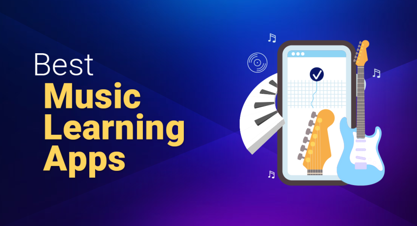
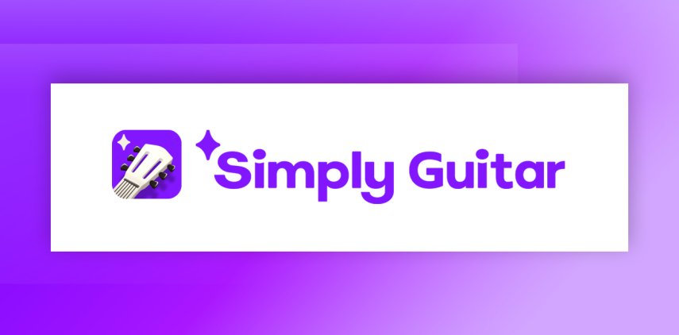
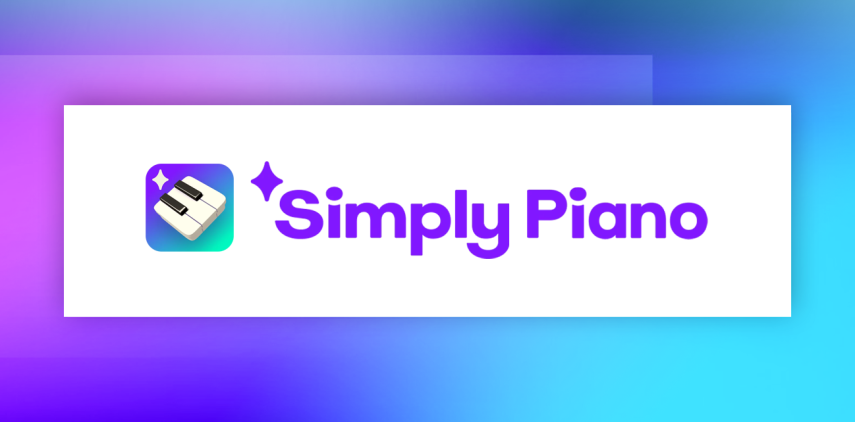
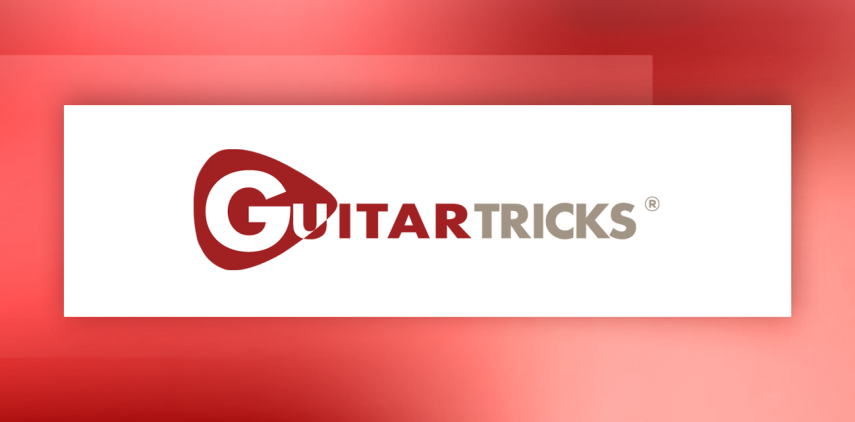

Scott Leavey | Updated on May 23rd 2024SEO and Online Marketing Consultant In a hurry? Here are the top music learning apps for 2025:
Best Music Learning Apps
Almost everyone has fantasized about becoming a musician at some point. In the past, this dream often felt out of reach—requiring extensive and expensive education in music schools or investment in private tutoring just to master a single instrument. Traditional teaching methods were also typically rigid and straightforward, causing many students to lose interest quickly and miss out on the excitement of creating music.
Today, however, an abundance of music learning apps has transformed how we approach music education, making it accessible and enjoyable for everyone. A quick online search can unlock numerous affordable—and even free—apps that cater to various tastes and skill levels. One standout example is Simply Guitar, which simplifies the learning process with engaging features for both beginners and experienced musicians alike. These apps offer a dynamic and interactive way to learn music, bringing the joy of musical creation to your fingertips.
An overview of the best music learning apps for 2025:
- 🥇 1. Simply Guitar — With Simply Guitar, you can dive into guitar learning through an affordable app that uses a gamified approach with interactive features. Enjoy step-by-step lessons on essential skills, chords, and strumming patterns at your own pace, and get started with a fun 14-day free trial.
- 🥈 2. Simply Piano — Simply Piano, the top-rated piano learning app, enables you to quickly learn piano through engaging and easy-to-follow courses, tutorials, and songs, ideal for all skill levels and accessible via a free trial.
- 🥉 3. Guitar Tricks — Guitar Tricks offers an extensive online learning system with over 11,000 lessons and tools like video feedback and a custom lesson plan, accessible through affordable subscription plans and a 14-day free trial.
- Frequently Asked Questions about Music Learning Apps (FAQ).
From Sheet Music to Smartphones
Learning music today, especially with the aid of apps and digital technology, presents several differences compared to how it was done decades ago. Here are some of the key changes:
- Accessibility: Today, anyone with a smartphone or computer can access a vast array of music learning tools and resources online. This contrasts with the past, where learning typically depended on access to physical materials and face-to-face instruction.
- Interactivity and Feedback: Modern music learning apps provide interactive lessons and real-time feedback on performance, using technologies like audio recognition and MIDI. Decades ago, learners would rely primarily on feedback from a human teacher during scheduled lessons, without the continuous, instant feedback that apps can provide.
- Self-Paced Learning: Digital tools allow learners to progress at their own pace, practicing anytime and anywhere. Previously, learning was often constrained to structured times with a teacher or during personal practice with static resources like books and cassette tapes.
- Cost Efficiency: Many apps offer free versions or are generally less expensive than regular lessons with a professional tutor. This makes learning more affordable and accessible to a broader audience.
- Variety of Learning Materials: Learners now have access to a wide range of genres, styles, and instruments through a single platform. In the past, such diversity could require multiple tutors or purchasing various specialized materials.
- Gamification: Many modern music learning apps incorporate elements of games, such as scoring, levels, and rewards, to motivate learners. This approach was less common in traditional music education, which was often more formal and less interactive.
- Global Connectivity: Apps and online platforms allow learners to connect with teachers and other students worldwide, offering opportunities for cultural exchange and learning that were not as easily accessible before.
- Multimedia Integration: Current technology integrates video, audio, and text seamlessly, providing a rich learning experience that can simulate different aspects of music performance, from playing with a band to composing music. This holistic approach was harder to achieve with older technologies.
These advancements have transformed the way music is taught and learned, making it more dynamic, accessible, and tailored to individual needs and preferences.
1. Simply Guitar — Best Guitar App for Beginners

As a beginner guitarist, Simply Guitar is your gateway to affordable and engaging guitar lessons, priced at just $9.99 a month or $119.99 annually. This app, available on both iOS and Android, is packed with features designed to ease your learning journey. You’ll find step-by-step tutorials that guide you from basic chords and strumming patterns right up to playing full songs. The gamified approach not only simplifies the learning process but also adds an element of fun, especially suitable if you're young or a kid at heart and might find traditional methods too challenging.
Simply Guitar stands out with its direct, real-time feedback feature, which is crucial for developing proper technique right from the start. This interactive tool helps you adjust your finger placement and strumming as you play, instilling good habits early on. The app enhances your experience with vivid graphics and animations, and video lessons that clearly show how to execute techniques.
Although the gaming aspect may not be for everyone, the blend of comprehensive content, user-friendliness, and cost-effectiveness makes Simply Guitar a top recommendation for new guitarists. If you’re still on the fence, a 14-day free trial offers a risk-free way to explore its features without commitment.
Get Simply Guitar - Start Playing Music Now!
2. Simply Piano — Best All-Around Piano Learning App

Simply Piano is a standout choice for those looking to dive into piano learning, from beginners to those seeking to polish their skills. The app, accessible via a variety of subscription plans including monthly ($19.99), annual ($119.99), and a lifetime option ($299.99), makes piano learning accessible and enjoyable through its engaging gamified format.
The app is structured into four comprehensive lesson levels that cater to both basic and advanced piano techniques. What makes Simply Piano particularly effective is its use of AI to provide instant feedback, helping users correct mistakes in real time and accelerate their learning curve. This feature is invaluable as it mimics having a personal tutor at your side, guiding you through each step.
Designed with user-friendliness at its core, Simply Piano appeals to a wide audience. Its intuitive interface and rewarding progression system make it especially appealing to children and young beginners who might need extra motivation. The app not only keeps learners engaged with its fun and interactive design but also allows for the creation of personal profiles, which track and reward progress, enhancing the educational experience.
If you're eager to start learning piano and need a great starting point, give Simply Piano a try. Its intuitive design and engaging gamification features make it easy to stick with your lessons. Ideal for children, young beginners, or anyone interested in a rewarding, progress-based approach to learning piano.
Get Simply Piano - Start Playing Music Now!
3. Guitar Tricks — Best in Class for Serious Guitar Players

Guitar Tricks stands out as a premier online guitar lesson platform, particularly suited for intermediate to advanced players looking to deepen their skills. With a subscription cost of $19.95 per month or $179 annually, the platform offers both limited free content and a vast library of over 11,000 lessons spanning a multitude of genres and styles, from mainstream to niche ones like surf and rockabilly.
The hallmark of Guitar Tricks is its Core Learning System, meticulously designed to guide players through structured, progressive learning paths. The platform is not only vast in content but rich in features, including high-quality videos with options for slow-motion and looping, which are invaluable for mastering complex techniques. Additional tools such as backing tracks, a metronome, and printable tabs enhance the learning experience, making practice both effective and engaging.
For those exploring options, Guitar Tricks offers some excellent free content to get started, and if you're convinced by the quality, there’s a 14-day all-access free trial available. Subscribers who opt for the annual membership can also enjoy an additional 25% discount. Whether you’re looking to refine your technique or expand your repertoire, Guitar Tricks provides the resources and structured guidance to help you achieve your guitar-playing goals.
Get Guitar Tricks - Start Playing Music Now!
Choosing the Best Music Learning Apps
When we selected the best music learning apps, there were several key criteria we considered to ensure that you would receive both an educational and enjoyable experience. Here is a breakdown of the essential factors we evaluated:
- Educational Value: The primary purpose of a music learning app is to effectively teach music. We look for apps that provide a clear, structured learning path from basic to advanced levels. The presence of comprehensive lessons, including theory, practical exercises, and song practice, is crucial. Additionally, we appreciate apps that offer curriculum designed by expert musicians or educators.
- User Experience: A great music app should be intuitive and easy to navigate, regardless of the user's tech savviness. We focus on apps that feature a clean, user-friendly interface with easy access to all resources. The app’s design should facilitate a smooth learning journey without unnecessary complications or distractions.
- Interactive Features: Interactivity enhances learning by making lessons engaging and responsive. We value apps that include interactive elements like real-time feedback, progress trackers, and customizable learning experiences. Features that allow users to see their mistakes and correct them in real time are particularly beneficial for solidifying skills.
- Content Quality and Variety: The best apps offer high-quality content that covers a wide range of musical genres, techniques, and instruments. This includes professionally produced videos, high-quality audio samples, and a diverse song library. Variety not only caters to users’ different musical tastes but also supports a well-rounded learning experience.
- Affordability and Accessibility: We consider whether the app provides good value for its cost. This includes the availability of free content, the cost of subscriptions, and what each pricing tier offers. Additionally, apps should be accessible on multiple devices and platforms, ensuring that users can learn whenever and wherever they choose.
- Feedback and Support: Effective learning apps offer support and feedback systems, whether through AI technology or direct communication with teachers. This can include video feedback, Q&A sections, or community forums where users can interact and learn from each other.
- Updates and Improvements: Regular updates are a sign of a dynamic app that adapts to users' needs. We look for apps that are consistently updated with new songs, features, and educational content, reflecting the developers' commitment to quality and user satisfaction.
Frequently Asked Questions about Music Learning Apps
🎸 Can you really learn an instrument just using an app?
Absolutely! Many music learning apps are expertly designed to take you from a complete beginner to an accomplished musician. They provide structured lessons, exercises, and sometimes even real-time feedback to help you master various instruments. While using an app, practicing consistently will be key to your success.
🎹 Are there any free music learning apps that are good?
Yes, there are several excellent free music learning apps available that offer valuable content without any cost. Apps like Skoove and flowkey provide robust features that can get you started on your musical journey. These apps often offer basic lessons and tools for free, with optional paid upgrades for more advanced features.
🎼 How do music learning apps compare to traditional music lessons?
Music learning apps offer a high degree of flexibility and convenience, allowing you to practice anytime and anywhere. While they can provide interactive lessons and instant feedback, traditional music lessons offer personalized attention and adjustments from a teacher that apps cannot fully replicate. Combining both can often yield the best results.
🥁 Can music learning apps help with music theory as well as instrument skills?
Yes, many music learning apps encompass both music theory and instrument skills in their curriculum. These apps integrate theory in a practical context, helping you understand how music works while you learn to play an instrument. This holistic approach can significantly enhance your overall musicality.
🎶 Do music learning apps work on both iOS and Android platforms?
Most popular music learning apps are developed to be compatible with both iOS and Android platforms, ensuring that you can access them regardless of your device. Always check the app store listings for specific compatibility details.
🎙 Are there music learning apps suitable for children?
Certainly! Apps like Simply Piano and Yousician are designed with features that cater to young learners, such as colorful graphics, simple interfaces, and engaging, game-like elements. These apps make learning music fun and accessible for children, encouraging them to develop their musical skills in an interactive environment.
Transparency and Trust: The aim of this website is to help you find the perfect software for your needs in an easy-to-view comparison list. You can read more about how we review and about our background in the About Us section of this website. Software.fish does not feature all of the software available in the market, we cherry-pick what we consider to be the leaders in each vertical. We try to keep this site updated and fresh, but cannot guarantee the accuracy of the information as well as the prices featured at all times. All prices quoted on this site are based on USD so there could be slight discrepancies due to currency fluctuations. Although the site is free to use, we do earn commissions from the software companies that we have partnered with. If you click on one of our links and then make a purchase, we will get paid by that company. This has an impact on the ranking, score, and order in which the software is presented in our list and elsewhere throughout the site. Software listings on this page DO NOT imply endorsement.